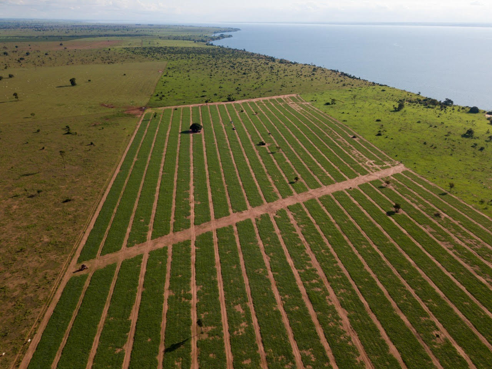
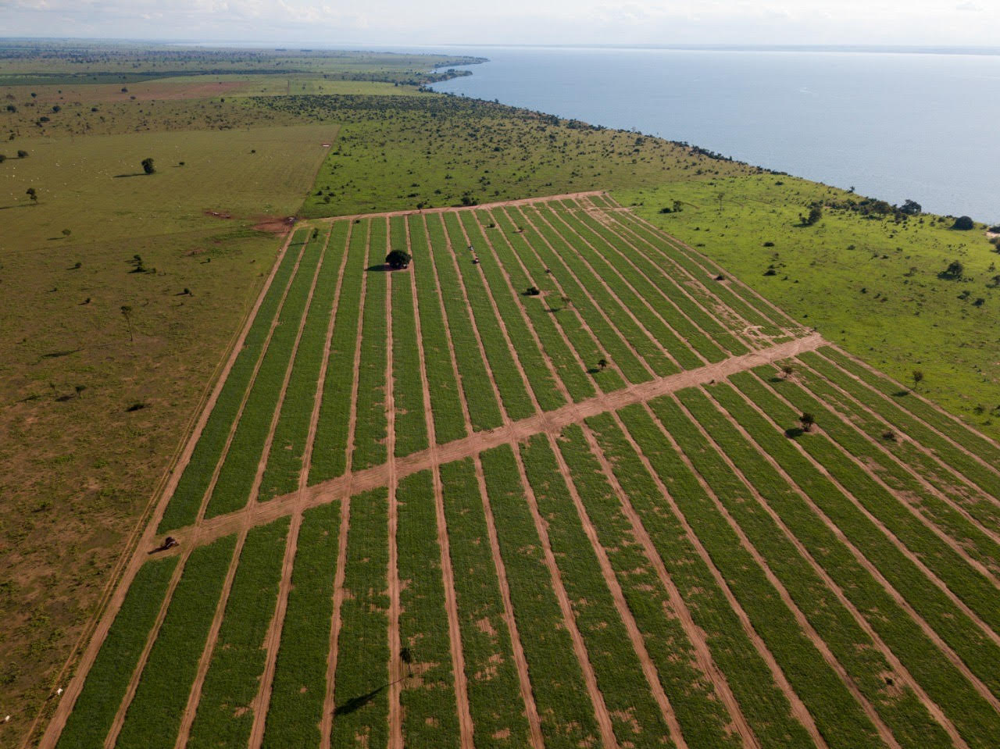

A MELHOR MELANCIA DO BRASIL
- Produção de Melancias
- Venda de Melancias
- Área de 12 alqueires
Escolhi esse tema que para mim tem grande importância, há mais de 13 anos minha familia vem trabalhando com compra e venda de melancias. No ano de 2020 em época de pandemia o meu pai, Claudinei Roskosz (conhecido por Barone), iniciou novos caminhos e começou a plantar. Desde então, nunca mais parou e hoje esse é o nosso pilar. A planta demora em torno de 90 dias para se desenvolver, precisa de muita água e calor. Costumamos dizer que esse é um exercicio de fé, pois você precisa confiar no processo e cuidar sem saber se no final vai vingar ou não. A melancia é exportada por todo o brasil, Goias, Paraná, São Paulo, Rio Grande do Sul, Mato Grosso, Rio de Janeiro, entre outros. Em Guarapuava, somos fornecedores de toda a rede superpão, dalpozzo, unimax, hortifrutti's e mais. Amo melancia e tudo que ela pode proprcionar em minha vida, por esse motivo escolhi compartilhar.
.jpg)
.jpg)
.jpg)
.jpg)
.jpg) 
